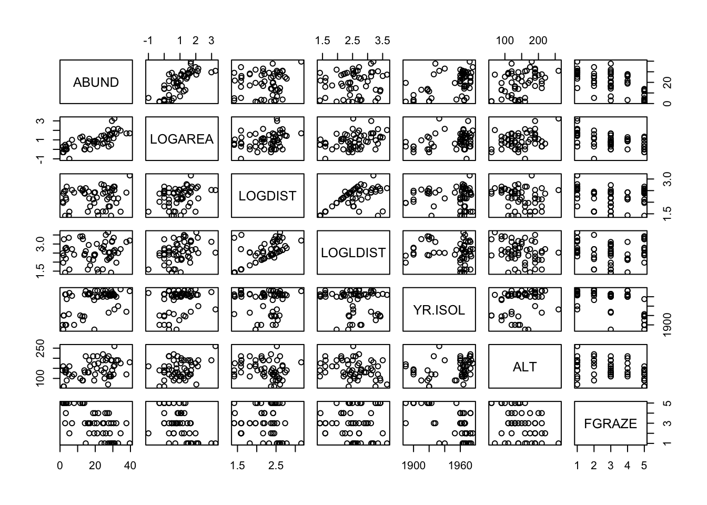

Exercise
Exercise: Model selection with the Loyn data
This exercise revisits the Loyn data, asking if a better model for the data could be achieved by including additional predictors, and applying a systematic model selection procedure.
- As in previous exercises, either create a new R script (perhaps call it linear_model_4) or continue with your previous R script in your RStudio Project. Again, make sure you include any metadata you feel is appropriate (title, description of task, date of creation etc) and don’t forget to comment out your metadata with a
#at the beginning of the line.
- Import the data file ‘loyn.txt’ into R and take a look at the structure of this dataframe using the
str()function. It seems so far that the abundance of birdsABUNDis explained by both the area of the patchLOGAREA, and the grazing intensityFGRAZE, but some observations are still poorly fitted by the model. Here we will be using all the explanatory variables to explain variation in bird density. If needed, remind yourself of your data exploration you conducted in Section 1. Do any of the variables need transforming? If so, what transformation did you apply? Add the required variables to the data set.
- We assume that all the predictors have been collected by the authors because they are believed to be biologically relevant for explaining bird abundance. However, it is a good idea to pause and think what might be relevant or not-so relevant or partly redundant and why, before even exploring the relationships with bird abundance (even graphically). You could do this in a table format, and include a hypothetical ranking of importance. Is there anything that limits your ability to fill that table?
- Start with a graphical exploration of the relationships between predictors and between predictors and response. A pair-plot with
pairs()is a very effective way of doing this when the number of variables is not too large. Hints:
- restrict the plot to the variables you actually need
- an effective way of doing this is to store the names of the variables of interest in a vector
VOI<- c("Var1", "Var2", ...) - and then use the naming method for subsetting the data set
Mydata[, VOI]

- Start with a model of ABUND containing all predictors. Don’t include any interactions at this point, we will simplify the exercise by including only the main effects (unless you have identified some interactions that you expect to be important?).
- Obtain summaries of the model output using the
anova()andsummary()functions. Make sure you understand the difference between these two summaries, and the mathematical and biological interpretation of the different coefficients (i.e. would you be able to reconstruct and use the model formula to make predictions? In doubt, try it and seek assistance!).
- Check for collinearity using the
vif()function in thecarpackage.
- Is everything significant? Which of the summaries do you prefer to use, and why?
- If not, perform a model selection step using
drop1()for choosing which single term is the best candidate for deletion (remember to use the test = ”F” argument to perform F tests). What is that term?
- Update the model and repeat single term deletions with
drop1(), until there are no longer any non-significant terms.
- At this stage, you should validate this model, if it is our final model. Hint: you probably have done it for this model already, in previous exercises.

- Let’s now get back to a previous model
birds.inter.1 <- lm(ABUND ~ FGRAZE * LOGAREA), which we left with non-significant terms. Do you need to usedrop1()to simplify that model?
- What is the final model then? What are the final conclusions or lessons you take away from this analysis of the Loyn data?
End of the Linear model with interactive continuous and categorical predictors exercise